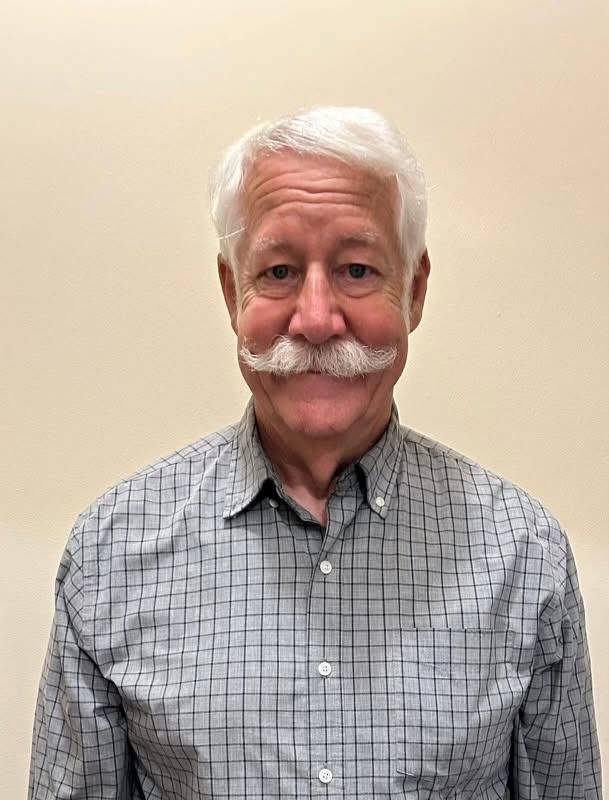
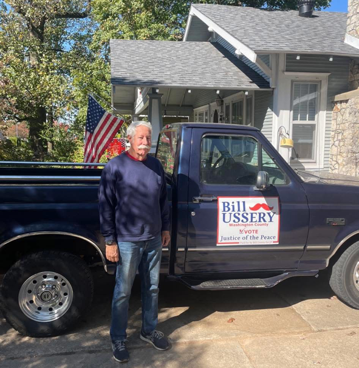

A lifelong Springdale resident committed to fiscal responsibility, professionalism, and serving the people of Washington County.

"I mustache you to vote for me!"
Bill is proud to have been born and raised in Springdale, Arkansas, a town rich in family values, a community full of diversity and a great place to call home. He truly cares about Springdale’s future. Being recently retired has given him more time to invest in his community.
He has been married for almost 50 years to Melissa Sarratt Ussery and has 4 children, all of whom attended Springdale Schools. His pride and joy are his 8 grandchildren, ages 1 to 15.
Bill believes that his faith is the foundational issue that firmly steadies his life in this world. He is an involved member of Cross Church, helping teach a small group, directing a weekly Impact Club for children and active with the church’s prison ministry.
He is a board member for a nonprofit group that works with folks that just got out of prison. He also volunteers for another nonprofit group by teaching a weekly leadership class as well as helping where necessary. He is a firm believer in giving a hand up instead of just a handout. Basically, teaching one “how to fish” along with giving one a fish when it is needed.
Decades of leadership and service to the people of Washington County.
Bill has proudly served on the Washington County Quorum Court in the past and demonstrated a steadfast commitment to his constituents. Knowing this experience he has had of serving will allow him to hit the ground running. There are so many moving parts to being a Justice of the Peace that it takes time and focus to learn all the different aspects, connections and proper protocols needed. Successful experience matters. One of the reasons he is running for this position along with bringing his past experience, is to also bring sound judgement, integrity and decorum back to the Quorum Court. If elected he will always do his best to be as prepared as possible for each meeting and treat all involved with honor and respect.
As chairman of the budget committee, he ensured the tax dollars were managed wisely. He was able to present a timely and balanced budget while creating department efficiencies and bring salaries more in line with prevailing wages in the area.
He believes in the CAP and CRI programs which have helped reform over 200 convicts in the last year via the Returning Home Community Program. A very high success rate of these graduates has been noted. Should he be elected, he will work with officials to develop common sense reforms in order to reduce the rate of re-offenses in Washington County, which will benefit all county residents.

Bill aims to facilitate better professionalism on the Quorum Court. It can be divisive and contentious at times, and we need dignified people with level heads to represent our County well and intentionally.
Conservative values mean ensuring the county government lives within its means, just like the families of Washington County do every day.
Small businesses are the backbone of our local economy. Bill supports policies that allow businesses in Washington County to thrive without unnecessary burdens.
Have a question or want to volunteer? Reach out to the campaign.
Your contribution helps us spread the message of conservative, dignified leadership across Washington County.
Contributions are not tax deductible for federal income tax purposes.